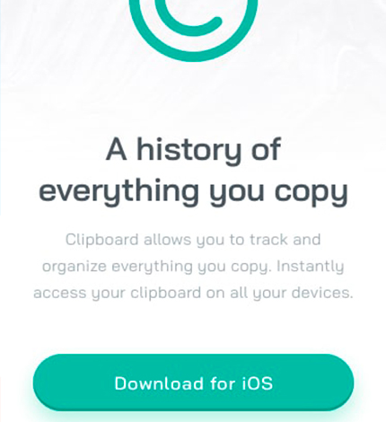

Mi nombre es Juan Carlos Alonso, soy desarrollador web y diseñador. Estudié Diseño integral y gestion de la imagen en la Universidad Rey Juan Carlos y desarrollo web Front end en Trazos. Ademas de vez en cuando, como hobbie personal me dedico a ilustrar.
En cuanto a desarollo web, poseo conocimentos de:
- HTML
- CSS
- JAVA SCRIPT
- SASS
